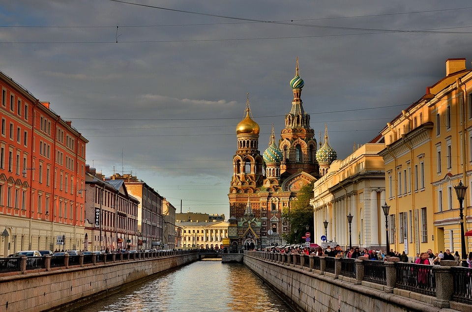
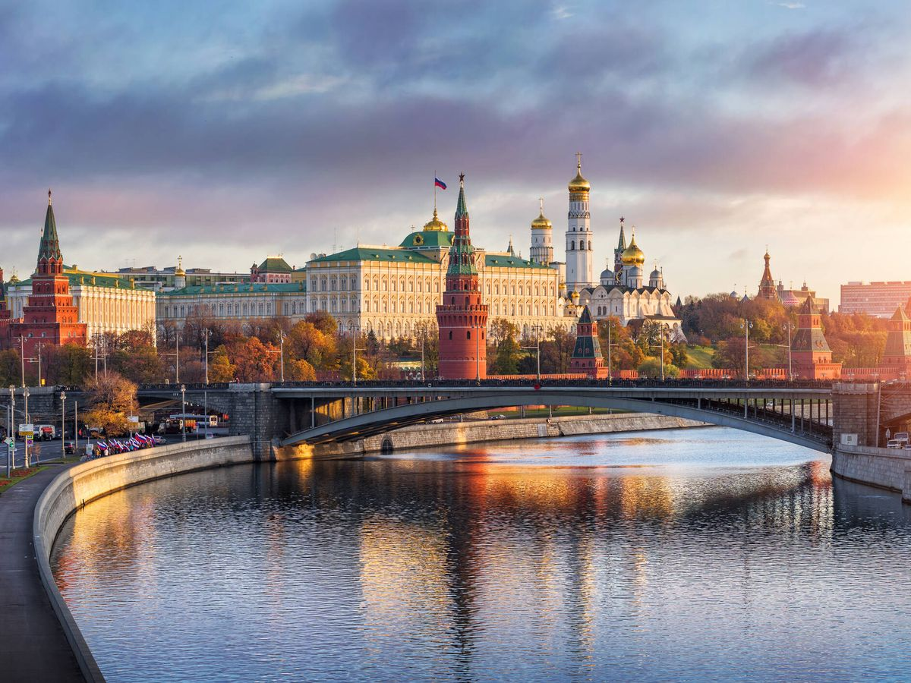
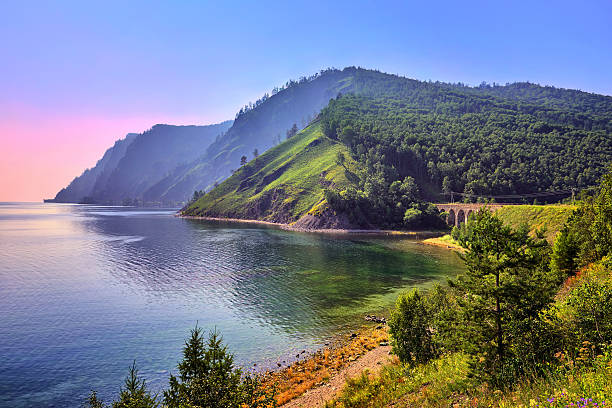
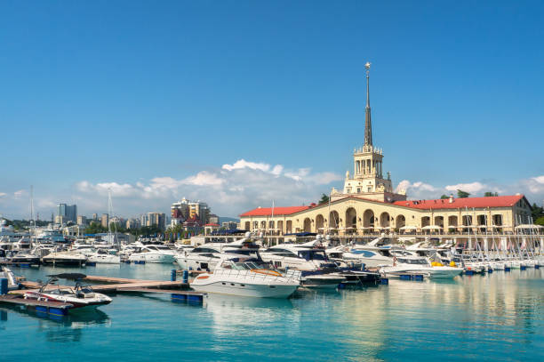
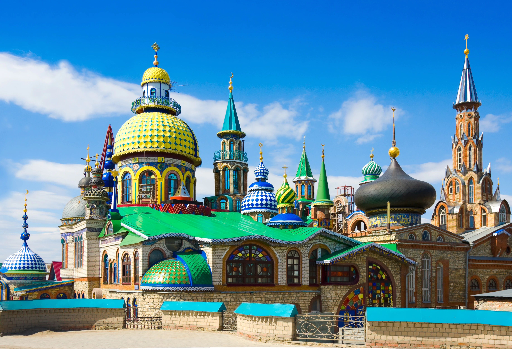
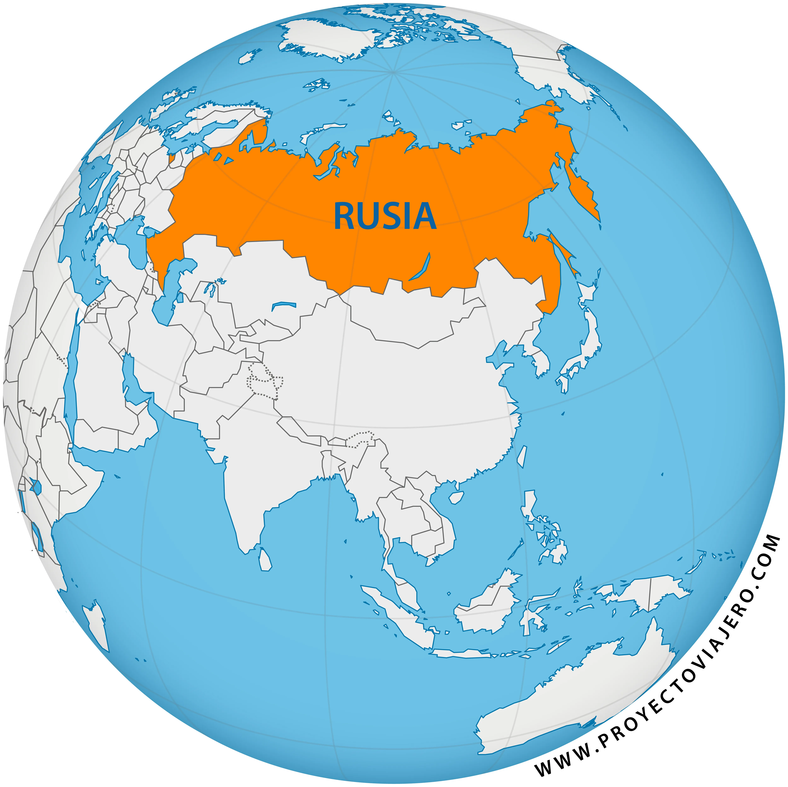
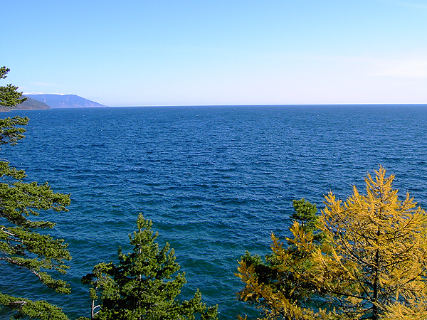
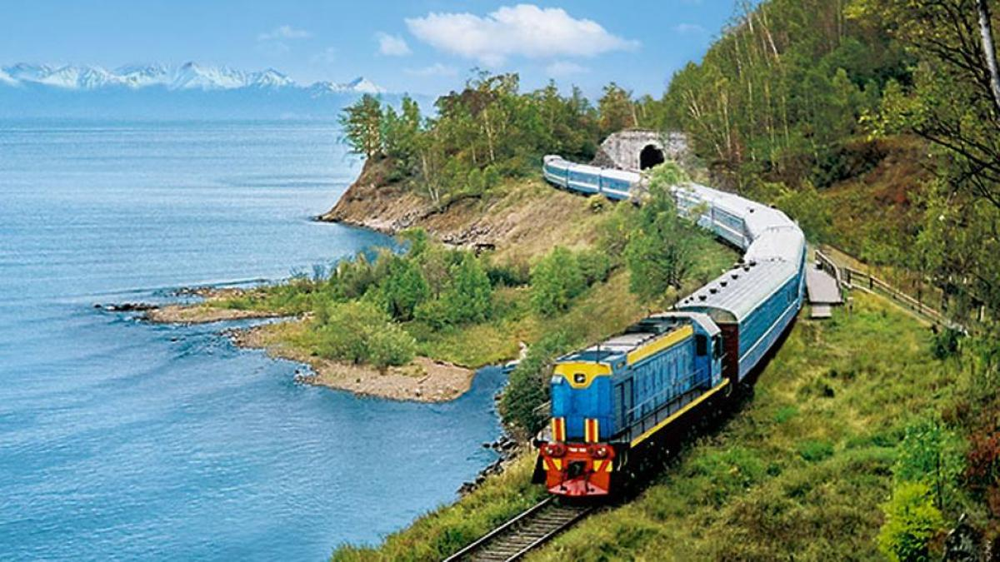

Descripcion del pais
Rusia, el país más grande del mundo por extensión, se extiende a lo largo de Europa del Este y Asia del Norte. Con una historia rica y compleja, surgió del principado de Moscú y se expandió significativamente bajo el Imperio Ruso y la Unión Soviética. Su economía, una de las más grandes del mundo, se basa en la energía, la minería y la manufactura, con vastos recursos naturales de petróleo y gas. Culturalmente, Rusia ha producido figuras icónicas en la literatura, la música y el ballet, como Tolstói, Tchaikovsky y el Ballet Bolshói, reflejando una herencia diversa y profunda. Políticamente, es una república federal con un sistema semipresidencialista, donde el poder se centra en el presidente, y juega un rol vital en la geopolítica global. Enfrenta desafíos como la corrupción, la centralización del poder, y tensiones internacionales con Occidente, así como cuestiones internas sobre derechos humanos, desarrollo económico y la modernización de su infraestructura.
5 lugares para ir de vacaciones
1. San Petersburgo
San Petersburgo, la segunda ciudad más grande de Rusia, es un destino imprescindible por su espléndida arquitectura, rica historia y vibrante vida cultural. Fundada por el zar Pedro el Grande en 1703, la ciudad es conocida como "La Venecia del Norte" debido a su extensa red de canales. Entre sus atracciones principales se encuentran el Hermitage, uno de los museos más grandes y antiguos del mundo, ubicado en el majestuoso Palacio de Invierno; la Iglesia del Salvador sobre la Sangre Derramada, famosa por su impresionante arquitectura y mosaicos; y la Fortaleza de Pedro y Pablo, la estructura original de la ciudad que alberga la catedral con las tumbas de los zares rusos. San Petersburgo también ofrece una vibrante escena cultural con numerosos teatros, galerías y festivales, convirtiéndola en un destino ideal para los amantes del arte y la historia.
2. Moscú
Moscú, la capital de Rusia, es una metrópolis dinámica que combina a la perfección lo moderno con lo histórico. En el corazón de la ciudad se encuentra la Plaza Roja, rodeada por el Kremlin, la residencia oficial del presidente ruso, y la icónica Catedral de San Basilio con sus coloridas cúpulas en forma de cebolla. El Teatro Bolshói, famoso mundialmente por sus producciones de ballet y ópera, y el Parque Gorki, un amplio espacio verde ideal para actividades recreativas, son otras atracciones destacadas. Moscú también es conocida por su impresionante metro, cuyas estaciones están decoradas como palacios subterráneos, y por su vibrante vida nocturna con una amplia oferta de bares, restaurantes y clubes.
3. Lago Baikal
El Lago Baikal, ubicado en Siberia, es el lago más profundo y antiguo del mundo, conocido por su agua cristalina y su biodiversidad única. Con más de 25 millones de años de antigüedad, Baikal es un sitio declarado Patrimonio de la Humanidad por la UNESCO. Las pequeñas localidades a orillas del lago, como Listvyanka, ofrecen actividades como senderismo, pesca y paseos en barco. La isla de Olkhon, la más grande del lago, es famosa por sus paisajes escarpados y sus formaciones rocosas sagradas. Durante el invierno, el lago se congela, permitiendo practicar deportes sobre hielo y disfrutar de las espectaculares formaciones de hielo.
4. Sochi
Sochi, situada en la Riviera del Mar Negro, es conocida por ser un destino turístico durante todo el año, gracias a sus playas y sus montañas. La ciudad ganó fama internacional al ser sede de los Juegos Olímpicos de Invierno de 2014, y sus instalaciones deportivas siguen siendo un gran atractivo. El Parque Nacional de Sochi, con sus exuberantes paisajes y cascadas, es ideal para los amantes de la naturaleza. Durante el verano, los visitantes pueden disfrutar de las playas, mientras que en invierno, las estaciones de esquí en las montañas del Cáucaso ofrecen excelentes oportunidades para practicar deportes de invierno. Además, Sochi es conocida por su clima subtropical y sus jardines botánicos.
5. Kazán
Kazán, la capital de la República de Tartaristán, es una ciudad con una mezcla única de culturas tártara y rusa. El Kremlin de Kazán, declarado Patrimonio de la Humanidad por la UNESCO, alberga la impresionante Mezquita Qolşärif y la Catedral de la Anunciación, simbolizando la convivencia de diferentes religiones. El Templo de Todas las Religiones es otro atractivo singular, representando diversas creencias en una sola estructura. Situada a orillas del río Volga, Kazán es conocida por su vibrante escena cultural y su rica historia que se refleja en su arquitectura y gastronomía. Además, la ciudad es un importante centro educativo y deportivo, albergando eventos internacionales y una gran cantidad de estudiantes de diversas partes del mundo.
Datos curiosos
1. El País Más Grande del Mundo
Rusia es el país más grande del mundo, con una superficie de aproximadamente 17,1 millones de kilómetros cuadrados, abarcando once zonas horarias diferentes y dos continentes: Europa y Asia. Esta vasta extensión territorial incluye una increíble diversidad de paisajes, desde tundras y bosques boreales hasta montañas y desiertos. La magnitud de su tamaño también le permite tener fronteras con 14 países, más que cualquier otro país en el mundo.
2. El Lago Más Profundo del Mundo
El Lago Baikal, ubicado en Siberia, no solo es el lago más antiguo del mundo, con más de 25 millones de años, sino también el más profundo, alcanzando una profundidad máxima de 1.642 metros. Este lago contiene alrededor del 20% del agua dulce no congelada del mundo, y es hogar de más de 1.700 especies de plantas y animales, dos tercios de las cuales no se encuentran en ningún otro lugar del planeta. Durante el invierno, la superficie del lago se congela, creando impresionantes formaciones de hielo que atraen a fotógrafos y turistas.
3. El Transiberiano: El Ferrocarril Más Largo del Mundo
El Ferrocarril Transiberiano es la línea ferroviaria continua más larga del mundo, recorriendo unos 9.289 kilómetros desde Moscú hasta Vladivostok en el Lejano Oriente ruso. El viaje completo toma aproximadamente siete días y atraviesa ocho zonas horarias. A lo largo de su recorrido, el Transiberiano pasa por una variedad de paisajes impresionantes, incluidos los Urales, la vasta taiga siberiana y las costas del Lago Baikal, ofreciendo a los pasajeros una experiencia única y panoramas espectaculares.
Quiz
¡Prueba tus conocimientos con este Quiz!
Gracias por participar
Tu puntaje fue: